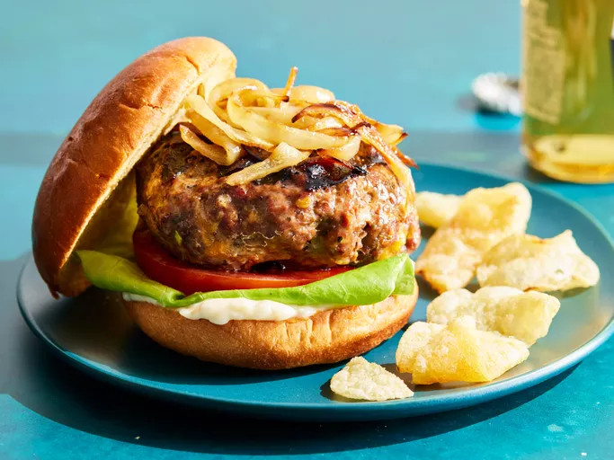

Home
Yogurt Recipe
Avocado Recipe
Best Hamburger Ever

Description
The best burger recipe for summertime grilling!
This juicy burger is jam-packed with all kinds of stuff and has no tasteless bread crumbs.
Serve on buns with your
favorite condiments.
Ingredients
-
Beef: These basic burgers start with 1 ½ pounds of lean ground beef.
-
Onion: A finely chopped onion takes the flavor up a notch.
-
Cheese: You’ll need shredded Colby Jack or Cheddar cheese.
-
Egg: An egg lends moisture and helps bind the patties together.
-
Seasonings, herbs, and sauces: These hamburgers are flavored with an envelope
of dry onion soup mix, fresh garlic, garlic powder, soy sauce, Worcestershire s
auce, dried parsley, dried basil, dried oregano,
crushed dried rosemary, salt, and pepper.
Steps
-
Combine the ingredients in a bowl.
-
Make four patties.
-
Grill the patties until the juices run clear and
the meat is no longer pink in the center.